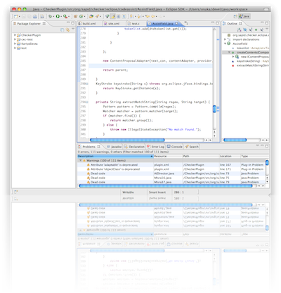

KariyaSiesta とは
KariyaSiesta は、C 言語向けのコーディングチェッカ CX-Checker の fork プロジェクトです。

Keep the Quality.
Keep your Smile:)
CX-Checker の特徴
CX-Checker は以下の特徴を持つ C 言語向けのコーディングチェッカです。
- Eclipse プラグインとして動作するコーディングチェッカ
- XPath による迅速なルール記述
- Java によるパワフルなルール記述
- XPath によるルール記述を補助するインタフェース
KariyaSiesta の変更点
KariyaSiesta は、CX-Checker の特徴に加え、以下の強化をしています。
- 更新サイト対応による容易なインストール
- JavaScript による柔軟なルール記述
- CDT 7.0 対応